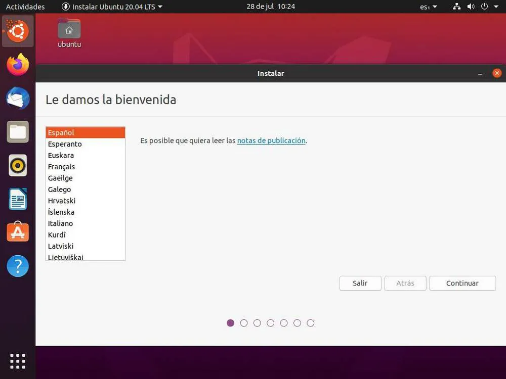
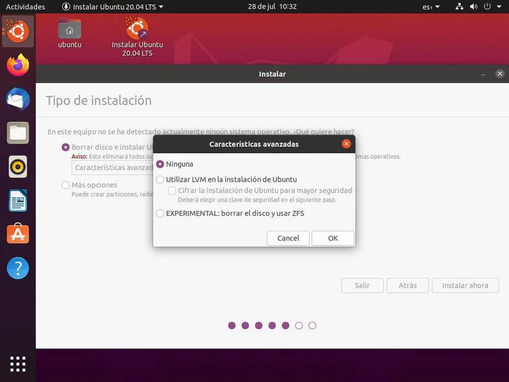
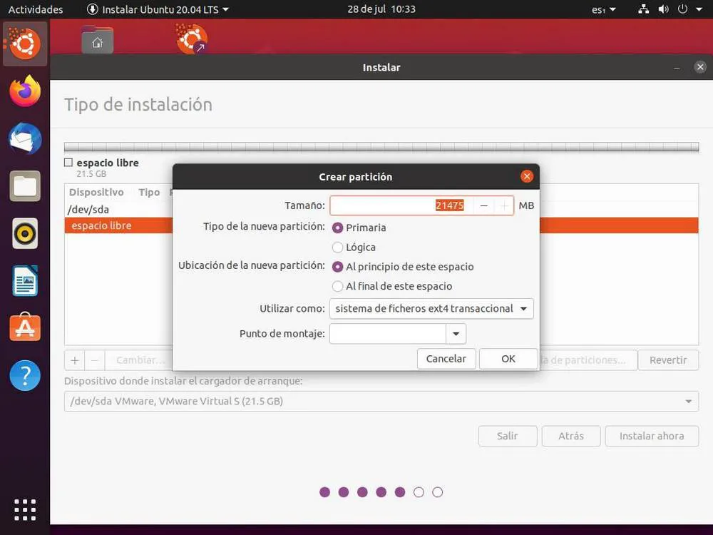
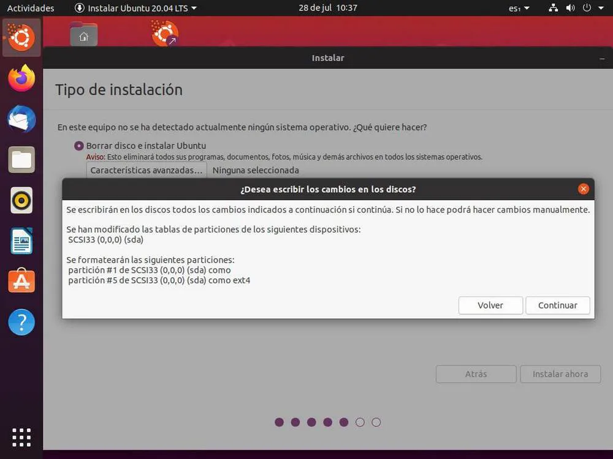
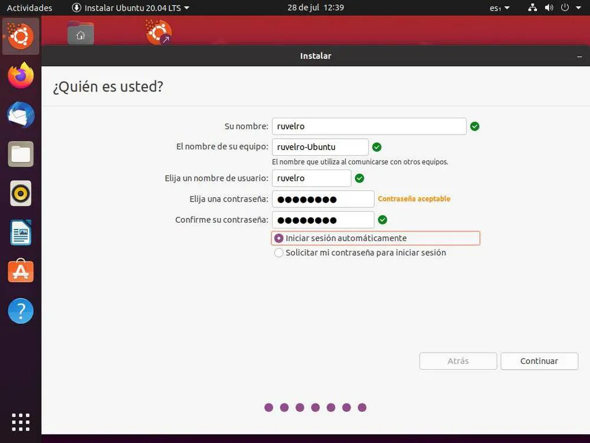

Como Instalar Ubuntu desde cero
Ubuntu es una de las distribuciones Linux más populares y más utilizadas por los usuarios,
especialmente por aquellos que empiezan a dar los primeros pasos en este sistema operativo.
Aunque no es la distribución que mejor refleja la filosofía Linux, esta es una de las más sencillas
de instalar, configurar y usar, lo que la convierte en un gran punto de partida a partir del cual
empezar a aprender. Y aunque esta distro está pensada para que ningún usuario pueda tener problemas,
siempre hay puntos de la misma que pueden llevarnos a confusión. Sobre todo a la hora de instalar Ubuntu.
Si ya tiene Obuntu y quiere actualizarlo, puede ver como aqui
El asistente de instalación de Ubuntu es de los más sencillos que nos vamos a encontrar. Este cuenta con
una interfaz gráfica y un asistente que nos irá guiando durante todo el proceso. El único punto que podría
darnos problemas sería a la hora de elegir el disco y crear particiones. Todo lo demás es muy sencillo y,
tal como os vamos a demostrar a continuación, podremos tener un Ubuntu listo en nuestro ordenador en
cuestión de minutos.
Pasos previos: descargar la ISO y crear un USB
Lo primero que necesitaremos para poder instalar Ubuntu en nuestro ordenador es descargar el sistema operativo.
Este podemos encontrarlo en el siguiente enlace a la página
oficial de Canonical, concretamente dentro de la pestaña «Download» de la parte superior.
Aquí vamos a encontrarnos con las distintas versiones de la distro que tienen soporte. Nosotros os recomendamos
bajar la versión LTS, ya que tendrá soporte para 5 años y nos ahorrará el tener que estar actualizando a todas
las versiones cada 9 meses.
Bajaremos la edición de Desktop, que es la edición para escritorio. Esta ocupará unos 2.5 GB,
y se bajará al ordenador en formato ISO. Si vamos a instalar Ubuntu en una máquina virtual podremos
hacerlo directamente desde la ISO. De lo contrario, tendremos que grabar la ISO a un DVD o, mejor aún,
a una memoria USB. Para este proceso os recomendamos usar el programa Rufus,
que podemos bajar de aqui.
Este programa nos permitirá crear una memoria USB de arranque a partir de cualquier imagen ISO.

Seleccionaremos la memoria USB donde queremos grabar Ubuntu, cargaremos la ISO y en un par de minutos ya
tendremos el medio de instalación creado. Eso sí, hay que tener en cuenta que durante el proceso se
borrarán los datos de la memoria. Cuando acabe el proceso, lo único que nos quedará hacer es apagar
el ordenador, grabar Ubuntu para que el ordenador arranque desde dicha memoria USB, y comenzará
el proceso de instalación de Ubuntu.
Instalar Ubuntu paso a paso
Ubuntu es un sistema operativo diseñado para arrancar en Modo Live, es decir, para cargarse en la memoria RAM
desde la ISO y permitirnos probarlo sin instalar ni alterar nada del sistema. Lo primero que veremos cuando el
sistema operativo acabe de cargar será una pantalla como la siguiente.
img src="JPG/BienvenidaObuntu.jpg" alt="Bienvenida de Obuntu">
En ella tendremos que elegir nuestro idioma, y además también si queremos probar Ubuntu, o si queremos lanzar
directamente el asistente de instalación. El resultado en ambos casos será el mismo, pero nosotros vamos a usar
la opción de «probar» para poder cargar Ubuntu en el PC y poder usarlo mientras lo instalamos.
Cuando veamos el escritorio, aquí tendremos un icono llamado «Instalar Ubuntu».

Hacemos doble clic sobre él para lanzar el asistente de instalación. Lo primero que nos encontraremos será
con la posibilidad de elegir el idioma del instalador, así como de leer las notas de publicación.

Continuamos, y en el siguiente paso el asistente nos permitirá
configurar el idioma y distribución del teclado.
Podemos elegirlo nosotros mismos de la lista, o dejar que el programa lo detecte automáticamente a través de
una serie de pulsaciones.

Seguimos con la instalación. El siguiente punto nos va a permitir elegir el tipo de instalación que queremos hacer.
Ubuntu nos ofrece dos tipos de instalación:
-
Normal: instala una serie de programas esenciales para poder usar la distro para todo, desde navegar hasta
ofimática, juegos y multimedia.
-
Mínima: una instalación mucho más pequeña. Incluye navegador web y los paquetes mínimos necesarios
para funcionar.
La opción recomendada para la mayoría de los usuarios es la instalación normal. Además, aquí también
podemos elegir si queremos bajar actualizaciones a la vez que instalamos el sistema operativo, o si
queremos incluir el software privativo para instalar automáticamente los drivers de la GPU o de las
tarjetas Wi-Fi, además de una serie de codecs privativos.

Crear particiones para Ubuntu
En el siguiente paso podremos elegir cómo instalar Ubuntu en el disco duro. Si tenemos otro sistema operativo
ya instalado, el asistente nos dará la opción de instalarlo junto a él. De lo contrario, nos permitirá borrar
todo el disco y configurarlo automáticamente para instalar la distro en él. Eso sí, esta segunda opción
borrará todos los datos que tengamos guardados en dicho disco duro para poder darle formato y crear la tabla
de particiones estándar.

El asistente de instalación nos permite elegir si queremos usar un sistema de cifrado de datos,
además de activar una opción experimental para usar un sistema de archivos ZFS.

Si elegimos «Más opciones» en vez de utilizar todo el disco, podremos abrir el gestor de particiones de Ubuntu.
Y desde aquí podremos crear las particiones que queramos usar. Esto es recomendable para usuarios que tengan
cierto nivel de conocimientos. Si no los tenemos, lo mejor es optar por el modo automático.

Si elegimos el modo automático os recomendamos crear, al menos, las siguientes particiones:
-
/ – Raíz de la distro Linux.
-
/home – donde guardaremos todos nuestros datos personales. Tiene que ser la partición de más tamaño.
-
/boot – lugar donde instalaremos el gestor de arranque.
Cuando esté todo listo, haremos clic sobre «Instalar ahora» para comenzar el proceso de instalación.
Y podremos ver un resumen con las particiones y puntos de montaje que vamos a usar.

Si todo está correcto, continuamos y comenzará la copia de los datos del sistema operativo. Pero,
aunque ya se estén copiando los archivos, aún no hemos acabado de configurar Ubuntu.
Últimos pasos para terminar la instalación
Mientras se copian los datos de nuestro Ubuntu y se aplican las configuraciones seleccionadas
tendremos que terminar algunas configuraciones esenciales. La primera de ellas será elegir
nuestra región, dónde vivimos. Esto se usará para ajustar el sistema métrico, el huso horario
y la moneda utilizada.

También tendremos que crear nuestro usuario principal. Este estará formado por un nombre de usuario,
una contraseña y el nombre que queremos dar al PC en red. También podemos elegir si queremos que
se inicie sesión automáticamente o no.

Listo. Ya hemos configurado Ubuntu. Ahora solo nos queda esperar a que se complete el proceso de
instalación del sistema operativo. Este puede tardar más o menos según el hardware del PC y
si hemos elegido bajar, o no, las actualizaciones durante este proceso. Mientras dura la instalación podremos
ver algunas de las características y usos de Ubuntu.
Cuando acabe el proceso de copia de los datos podremos ver un mensaje como el siguiente que nos indicará
que nuestro Ubuntu se ha instalado correctamente y que tendremos que reiniciar el PC para terminar con
la instalación y poder empezar a usar este nuevo sistema operativo.

Qué hacer después de instalar Ubuntu
Tras reiniciar el ordenador ya tendremos nuestro Ubuntu instalado y listo para funcionar. En un principio,
Ubuntu será totalmente funcional. No tendremos que hacer nada para empezar a usar este sistema operativo.
Si necesita algunas pequeñas recomendaciones que nos permitirán disfrutar al máximo de esta distro, las puede
encontrar aqui.